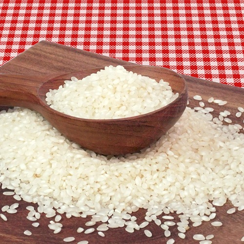
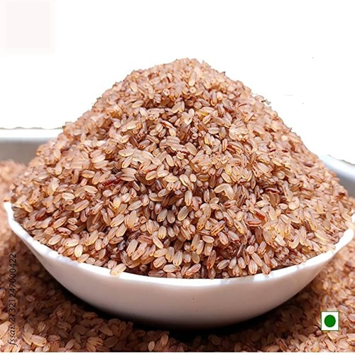

Our Best Selling Products

Deluxe
Deluxe rice is a type of rice that is often extra-long grain, smooth, and firm.
$60.00 / 1kg

Idly Rice
Idly rice is a short-grain rice variety that's specially processed for making idlis, a popular South Indian breakfast dish.
$50.00 / 1kg

Ponni Rice
Ponni rice is a medium-grain rice variety that is popular in South India.
$65.00 / 1kg

Seeraga Samba Rice
Seeraga Samba rice is a small, aromatic rice variety from Tamil Nadu, India.
$120.00 / 1kg

Basmati Rice
Basmati rice is a long-grain rice that is known for its aroma and flavor.
$120.00 / 1kg

Kerala Brown Rice
Kerala brown rice, also known as Kerala Matta rice, is a traditional variety of rice grown in the Palakkad region of Kerala, India.
$150.00 / 1kg